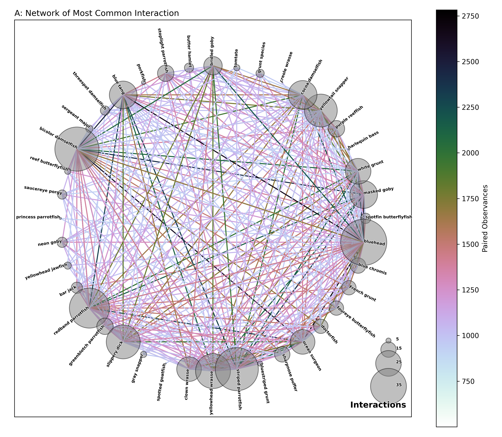
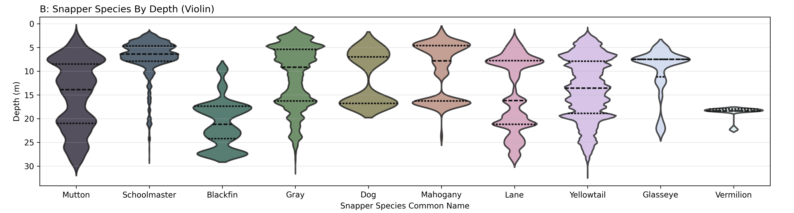
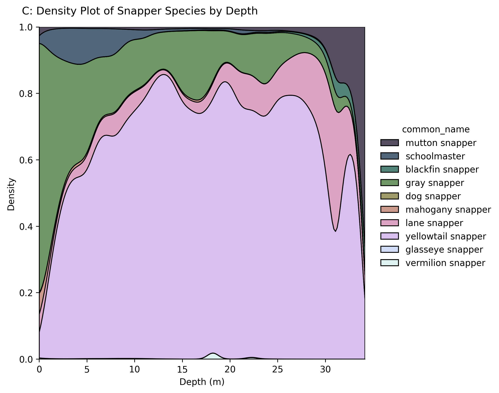
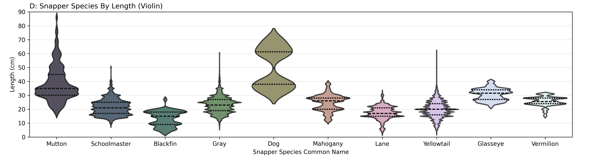
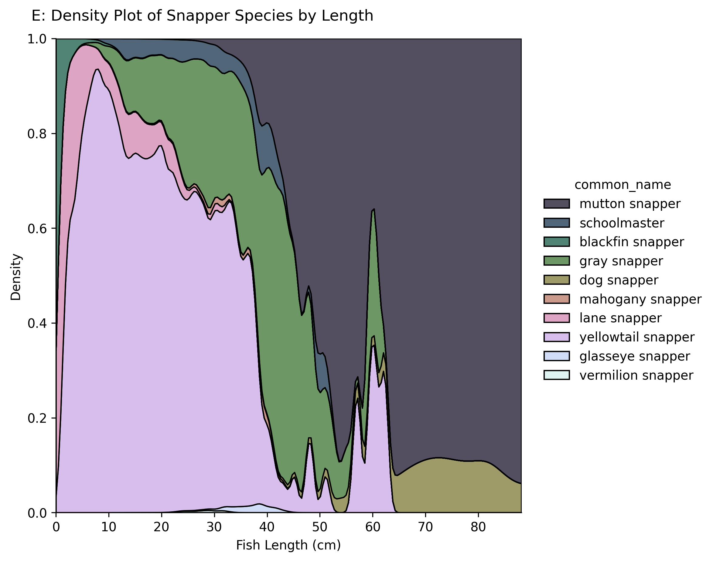

Reef Fish
Background

This is an investigation into a survey dataset generated by the National Oceanic and Atmospheric Administration’s Southeast Fisheries Science Center (NOAA Fisheries) and the National Centers for Coastal Ocean Science (NCCOS).
This dataset includes coral reef fish survey data from three distinct regions along the Florida reef tract: 1) Dry Tortugas, 2) Florida Keys from Key West to Miami, and 3) Miami to Martin County.
The data were collected using a two-stage, stratified random survey design, employing the stationary point count method (7.5m radius cylinder) as part of the ongoing National Coral Reef Monitoring Program (NCRMP).
Particular data spans from May 2014 through 2018 although the survey is still ongoing. Over 250,000 data points capture fish species, depth, length, and counts at more than 5,000 individual locations across the Florida Reef Tract (see map of all geopoints in image to the right).
The explicit purpose of the data and the countless hours devoted into such an extensive survey are to "To provide continued reef fish and habitat monitoring in Florida’s coral reef tract; to assess population and habitat trends,
fish-habitat associations; and to assess ecosystem responses to natural events (e.g., hurricanes), management measures and anthropogenic impacts".

This data is particularly interesting to me as I have spent a fair bit of time underwater in the Florida reef tract. Fishing and diving in the region is some of the best in the contiguous United States, and it is a privilege to have resources devoted to researching and protecting this environment. While I am most familiar with the region of reef east of Biscayne Bay, the entire dataset is intriguing. I want to determine how similar my observations are to those of seasoned surveyors and see if I can gain any insight into species distribution, habitat, or patterns that will help me be a more informed diver.
Data is structured like that in the table below. In the table below, there were three gray triggerish seen at 23.5 and 23.9 m deep. Two were 29 cm in length and one was 22 cm. There were also 36 tomtates of either 10 or 12 cm. To better quantify overall observations, any fish with multiple individuals of one length recorded at a single location and timestamp were "flattened" into multiple equivalent rows each of one observation at that length.
| Time | Longitude | Latitude | Depth | Species # | Scientific Name | Common Name | Length | Number Seen |
|---|---|---|---|---|---|---|---|---|
| 2014-05-06T00:00:00Z | 27.17738 | -80.04002 | 23.5 | 16 | Balistes capriscus | gray triggerfish | 22 | 1 |
| 2014-05-06T00:00:00Z | 27.17738 | -80.04002 | 23.9 | 16 | Balistes capriscus | gray triggerfish | 29 | 2 |
| 2014-05-06T00:00:00Z | 27.17738 | -80.04002 | 23.9 | 90 | Haemulon aurolineatum | tomtate | 10 | 6 |
| 2014-05-06T00:00:00Z | 27.17738 | -80.04002 | 23.5 | 90 | Haemulon aurolineatum | tomtate | 12 | 30 |
Fish Diversity
One of the first things we might want to investigate in this sampling study is the species diversity. Diversity can
be quantified a number of ways, but the easiest is looking at the quantity of unique species observed and their relative prevalence. In our selected data set from 2014 to 2018 in the Florida Reef Tract, 276
different common names were recorded. Most of these represent independent species while a few of them are unidentified subtypes like "surgeonfish species". The most observed species is the masked goby with over 236,000 noted individuals.
Several species were only observed once - among them were: [yellowfin group, tiger goby, papillose blenny, lookdown, dwarf goatfish, etc.].
To visualize this species diversity, two treemaps are presented below. The first treemap includes all species observed more than 250 times while the second is all species observed less frequently. The treemaps
are separated to not obscure the rarer fish. Each tree map can be interacted with by selecting a group name to enlarge or by hovering over the cell to see summary stats like the total observations, average length, and average depth. The maps
are shaded by average depth. Click the top by the name to return to the parent group.
These maps are information dense and require a little bit of time to process. Some notable observations are:
- The 176 rarer species account for only 0.76% of all observations despite being 64% of total diversity.
- The sardine group contains both the shallowest average species depth (scaled sardine, 2.38 meters) and the deepest (redear sardine, 25.66 meters).
- The Goby group has the greatest representation with 17 species noted (+1 general Goby). The next highest is Parrotfish with 15.
There are also a number of seldom or never-recorded species that feel underrepresented based on my own experiences. A few that come to mind are the cobia and the cubera snapper which were never sighted, and there was only one sighting of a Spanish mackerel. The Spanish mackerel would be far more common than a cero from personal experience, but survey results say this ratio is 111:1 in the opposite direction than expected.
Community
 After looking at overall species diversity, we can also look for connections and interactions between species. An interaction for these purposes is effectively close proximity -
two species observed in the same 7.5 m radius water column around a coordinate at one time. Every time a pair of species are recorded together, that pair is noted and its score increases by one.
Plotted in Figure A are all connections occurring at least 500 times. Each connection is drawn as a shaded line between the two species of the interaction. The line color represents how many times
this interaction was observed while the species circle size represents how many other species it was seen in proximity to more than 500 times.
In total, 337 unique interactions or lines are shown in this network. The data had to be filtered to exclude less frequent interaction because unfiltered there would be 16125 connections between all 276 species. This would create a truly
unreadable network (believe me I tried). With a lower limit on the number of connections before a node is visible, our network instead contains a more manageable 40 species.
Processing this data is easiest in sections. First, if we look at the nodes of the network we generally see what we might expect: more common fish are more frequently seen in close proximity to other fish. However, looking deeper, we
see that the masked goby (9°) does not have the most connections to other fish in this network. Similarly, fish like the tomtate (81°) and the bar jack (207°) are also underrepresented in node size compared to their observed quantity in the above tree maps.
One likely explanation for this is that these species are often seen in schools, yet the schools are more isolated than other typical reef fish. Conversely, the largest nodes are the bluehead, the striped parrotfish, and the bicolor damselfish.
These aquarium-quality fish are plentiful, well-dispersed, and generally non-predatory towards other fish.
The most observed pairing is that of the blue tang and the bicolor damselfish - seen together over 2500 times. Compared to only ~5500 survey events, there is a very high likelihood of seeing each of these species in the wild, and very often they will be seen together.
Of the 5 parrotfish species depicted in this network (striped, redband, greenblotch, princess, & stoplight), none of them form a strong connection. This may be due to resource competition as the five species occupy similar or overlapping ecological niches.
Snapper Specifics
Many of our target species while fishing are subtypes of snapper. These predatory reef fish come in several varieties and have distinct behaviors towards divers. The gray snapper (or mangrove snapper) is the most familiar fish to me of all the fish in this survey. Curious to see if the survey results align with my own perception of these snapper behaviors, plotted below are the depth distribution for each species as well as the overall distribution at every depth for all species.
 The violin plots in Figure B have more or less granularity depending on the quantity of observations. For example, the yellowtail, gray, and schoolmaster snapper all have a detailed profile across depths whereas the dog snapper distribution is very rounded. Only 8 dog snapper were observed across this study, so the plot shape will be less accurate (I am certain dog snapper do not have a bimodal distribution with depth and this is an artifact of low sampling). The schoolmaster almost exclusively occupies shallow water whereas the blackfin snapper prefers deeper water. The yellowtail, gray, and mutton snapper are reasonably well distributed. At almost every depth you are mostly likely to see a yellowtail snapper except in very shallow water. For the most part this all matches with my own experience although I often think of the gray snapper being the most common. I have not had sufficient encounters with the blackfin, vermilion, or glasseye snapper to say if the data matches my experience.
 If we instead look at snapper length, we can tell that most species rarely exceed 30 cm (1 ft). The more common species can occasionally have some large outliers - great targets for fishing. By far the largest species is the mutton snapper which is recorded at almost 3 ft in this survey. Based on these results, beyond 60 cm, there are really only two snapper species you could be looking at: the dog and the mutton. However, not demonstrated in this data is the cubera snapper which can reach lengths far in excess of those demonstrated by the nine species above. Additionally, elusive lane and mahogany can occasionally be longer than their maximums in the data. The spike in yellowtail at 60 cm is a little curious and is most likely rationalized through bias in survey method sampling or recording.
Comments
Most of the data depicted above matches personal experience underwater in this region. The study really helps me appreciate the wide diversity of life in the Florida reef systems as I am often pretty focused on finding
a select few target species. So much of the biodiversity is shorter than 15 cm and I rarely stop to appreciate all of these inedible species. The most observed species by surveyors is one that I did not even know the name of despite hundreds
of hours under water.
There is so much here in this still growing dataset. One element I was not able to find much trending in were cyclical or timescale patterns of fish length or depth. Continued data collection could enable discovery of those patterns.
I encourage readers to explore the NOAA repositories or even to continue along this investigation into the Florida reef tract.
Links
- GitHub Repository
- NOAA
- Smith, S. G., Ault, J. S., Bohnsack, J. A., Harper, D. E., Luo, J., and McClellan, D. B., “Multispecies survey design for assessing reef-fish stocks, spatially explicit management performance, and ecosystem condition”, Fisheries Research, vol. 109, no. 1, pp. 25–41, 2011. doi:10.1016/j.fishres.2011.01.012